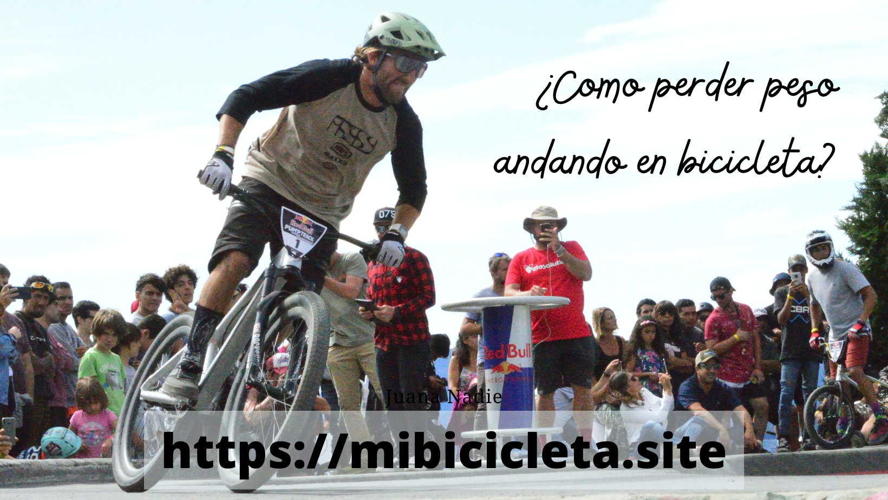

¿Como bajar de peso andando en bicicleta?

Tabla de contenidos
- 1.- Ejercicio aerobico
- 2.- Ejercicio anaerobico
- 3.- Constancia
- 4.- Andar en bicicleta en ayunas
- 5.- La alimentación
Para ello lo primero que tendremos que tener en cuenta para bajar nuestro peso, es que el tipo de ejercicio que debemos de hacer es ejercicio aeróbico
1.- Ejercicio aerobico
Es aquel en el que nos movemos entre el 60 y el 75 por ciento de nuestras pulsaciones y esto porque en ciclismo empezamos a quemar grasas más tarde de lo que lo hacemos en otros deportes, sin embargo en bicicleta necesitamos más o menos media hora o 40 minutos para empezar a quemar grasa, de modo que, necesitaremos hacer un entrenamiento más largo con un ritmo más tranquilo, estos entrenamientos serán de entre una hora a dos horas y media más o menos. Con todo esto lo que nos vamos a encontrar es que nuestra cintura se va a afinar y que lo que son brazos y piernas, lo que son las extremidades también van a ir afinando.
2.- Ejercicio anaerobico
La grasa de la barriga nos va a costar más quitarla con lo cual vamos al punto número dos, la parte de la barriga, a diferencia de las otras, no nos proporciona una cantidad de energía tan elevada de modo que lo que tendremos que hacer será justo lo contrario al punto número uno y tendremos que hacer entrenamientos de tipo anaeróbico, estos entrenamientos son mucho más explosivos, mucho más intensos y que a la vez también van a ser más cortos en tiempo, van a ser de hasta una hora o hasta una hora y media, depende de cuál sea nuestro estado de forma, vamos a empezar a quemar grasas y el cuerpo necesita grasas de todos los sitios a quemar las grasas de la barriga.
Lo ideal sería combinar el 1 con el 2 para así hacer un entrenamiento mucho más completo y perder peso por igual a lo largo de todo nuestro cuerpo.
3.- Constancia
Llegamos al tercer punto y es que el tercer punto es un punto clave y es la constancia, da igual si practicamos ciclismo si practicamos running, si nadamos, da igual lo que hagamos lo importante en todos estos casos es tener constancia es ser constantes. Vamos a necesitar de un tiempo largo, seis meses a un año incluso, para perder peso para quedarnos en un peso en el que estemos a gusto con nosotros y sea beneficioso a nivel de salud y a la hora de practicar deporte.
4.- Andar en bicicleta en ayunas
Una de las preguntas más habituales a la hora de perder peso y asociado al entreno es la de ¿entrenar en ayunas funciona? Bien entrenar en ayunas no es algo muy bueno, el hecho de entrenar en ayunas tiene sus pros y tiene evidentemente sus contras y es que cuando salimos sin haber comido, sin haber ingerido alimentos, especialmente cuando es por la mañana después de dormir nos encontramos con que el cuerpo tiene las reservas de glucógeno y de azúcar muy bajas, con lo cual la energía que el cuerpo va a empezar a consumir antes es la grasa que tengamos en nuestro cuerpo de modo que muy pronto desde que empezamos a entrenar vamos a empezar a consumir grasas, si por un lado es bueno por otro lado tenemos que tener en cuenta que los entrenamientos que hagamos han de ser cortos, han de ser de poca intensidad ya que el cuerpo va a estar tirando directamente de grasas, no tiene azúcares no tiene glucógeno y es importante que tengamos esto en cuenta ya que si no nos podemos encontrar con las temidas bajadas de azucar o con problemas aún mucho mayores, si hacemos un entrenamiento sin haber comido nada y de 4 horas a pleno sol porque seguro que esto no va a ser beneficioso.
5.- La alimentación
El quinto punto de todo esto y creo que es uno de los puntos más importantes es la alimentación. por un lado en el tema de la alimentación nos podemos encontrar con productos como la l-carnitina que es un producto que ayuda a transformar la energía en grasas, esto nos va a ayudar a quemar grasas del cuerpo de manera mucho más rápida para metabolizar las antes y por otro lado tenemos la dieta, es importante que hagamos una dieta que se adecue a el entrenamiento que estamos haciendo y que sea buena para nosotros, de todos estos puntos hay que tomarlo como una idea, deben de ponerse en manos de profesionales, que son quienes nos van a ayudar y que nos van a dirigir correctamente un entrenamiento y una buena dieta
Si lo que queremos es bajar de peso con estas ideas con estos cinco puntos, el entrenamiento sería algo como esto: vamos a hacer tres días de entrenamiento aeróbico, tres días con una intensidad un poquito más baja en la que vamos a añadir un cuarto día de entrenamiento anaeróbico o un entrenamiento un poquito más potente, el lunes va a ser el día de descanso, ya que vamos a tener un fin de semana intenso, el lunes va a ser día de descanso, el martes vamos a hacer el primer entrenamiento de la semana, un entrenamiento en ayunas de una hora y media de ser posible por la mañana, una hora y media rodando suave simplemente por empezar a mover el cuerpo el miércoles vamos a hacer entre una hora y una hora y media de entrenamiento intenso, vamos a meter este día de entreno anaeróbico que lo va a acompañar el jueves con un día de descanso, un día de relax, después de estos dos días el viernes o el sábado haremos un entrenamiento aeróbico, un entrenamiento un poquito más largo, más de fondo, pasando de ser posible de las dos horas, en las que no pasaremos de unas pulsaciones muy altas pero sí que vamos a estar un par de horitas dando pedaleadas, por lo general cuando más tiempo tenemos la gran mayoría es el domingo, el día de fondo por así decirlo, va a ser también un entrenamiento aeróbico, un entrenamiento en el que vamos a intentar pasar también de esas dos horas para hacer entrenamiento más largo, acompañado del descanso que tendremos el lunes.